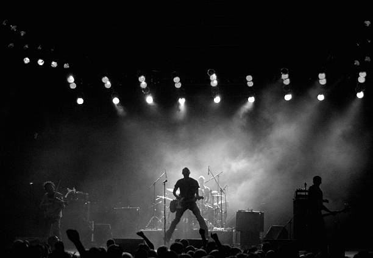
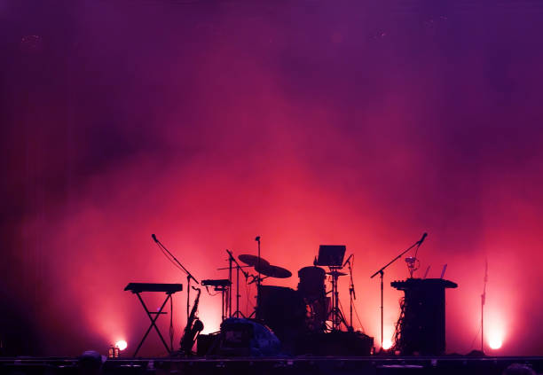
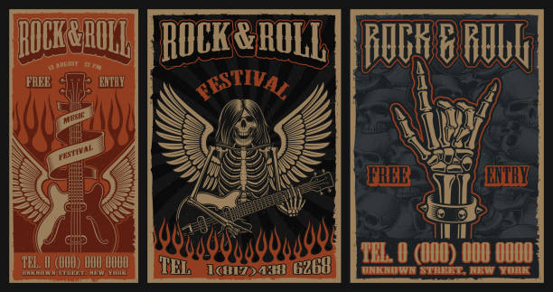

Bandas Famosas de Rock
- 01.The Beatles
- 02. The Rolling Stones
- 03. U2
- 04. Pink Floyd
- 05. Led Zeppelin
- 06. The Who
- 07. Radiohead
- 08. Nirvana
- 09. The Velvet Underground
- 10. The Doors
- 11. The Clash
- 12. The Byrds
- 13. Oasis
- 14. The Beach Boys
- 15. The Smiths
- 16. The Police
- 17. R.E.M.
- 18. Depeche Mode
- 19. T Rex
- 20. Queen
- 21. Joy Division
- 22. The Strokes
- 23. Talking Heads
- 24. The Kinks
- 25. Metallica
- 26. Wilco
- 27. Pearl Jam
- 28. Guns N Roses
- 29. The Band
- 30. Deep Purple
- 31. System of a Down
Fotos y ejemplos de Rock

Concierto

Concierto 2

Festival de Rock Poster

Guitarra